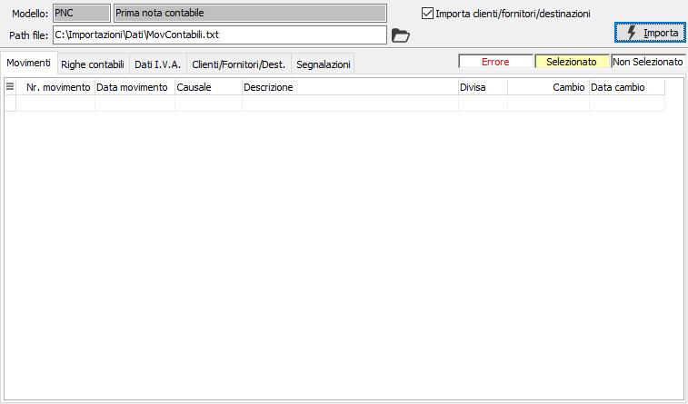
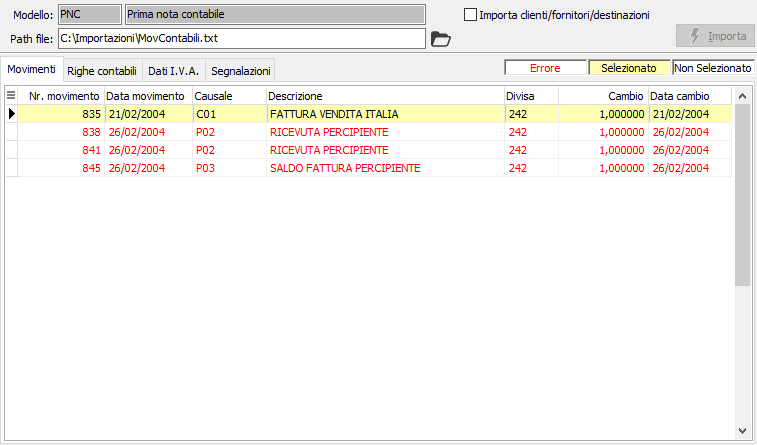

Importazione prima nota contabile
La procedura consente di importare i dati relativi a movimenti contabili e scadenze provenienti da altre applicazioni. In questa fase è possibile effettuare l'importazione anche di clienti, fornitori e destinazioni, se presenti i moduli relativi per effettuare l'import e se spuntate le relative caselle; in caso contrario non compare nemmeno la relativa pagina nella finestra.

MODELLO: indica il modello utilizzato per l'importazione dei dati. Il campo non è modificabile, ma viene compilato in modo automatico all'avvio della procedura. Nel caso non venga trovato nessun modello valido la procedura non sarà utilizzabile.
PATH FILE: indica il nome del file, completo di percorso, con cui effettuare l'importazione; viene proposto automaticamente in base al modello utilizzato. Tramite il pulsante Cartella è possibile selezionare direttamente il file interessato, ma l'uso di un file diverso da quello previsto comporta un avviso che non pregiudica il funzionamento della procedura.
IMPORTA CLIENTI/FORNITORI/DESTINAZIONI: se attivo, consente di importare clienti, fornitori ed eventuali destinazioni (casella con segno di spunta).
La pressione del pulsante Importa, seguita da una richiesta di conferma, dà inizio all'operazione di import che riporta i dati dei movimenti importati, in modo non definitivo, nelle relative pagine della finestra e le segnalazioni relative alle operazioni svolte ed eventuali errori nella pagina segnalazioni.

Nella sezione principale sono evidenziate, in rosso, nella griglia i movimenti importati con errori che non potranno essere selezionati per la memorizzazione definitiva, con sfondo giallo, i movimenti importati correttamente e già selezionati per la memorizzazione, come indica la legenda posta sopra le pagine. Per i clienti, fornitori e destinazioni se gestiti, non sarà possibile selezionare quali codici importare in definitivo, ma saranno importati tutti i codici corretti; eventualmente è possibile trovare delle righe evidenziate in verde, questo significa che il codice importato esiste già ed in fase di salvataggio definitivo sarà richiesto se sostituire i codici già esistenti oppure lasciare inalterati quelli presenti.
Per i movimenti è invece possibile selezionare o deselezionare una singola riga valida tramite il doppio clic del mouse, se questa operazione viene eseguita su di un rigo evidenziato in rosso saranno visualizzati gli errori relativi a quel singolo movimento. È anche possibile utilizzare il menù attivato tramite la pressione del tasto destro del mouse, per selezionare o deselezionare tutte le righe.
Per ogni movimento è possibile visualizzare le righe e le eventuali scadenze importate dalla sezione Righe contabili ed i Dati dell'Iva nella sezione Dati I.V.A.
La pressione sul pulsante Salva posto sulla toolbar determina il salvataggio definitivo dei movimenti selezionati.